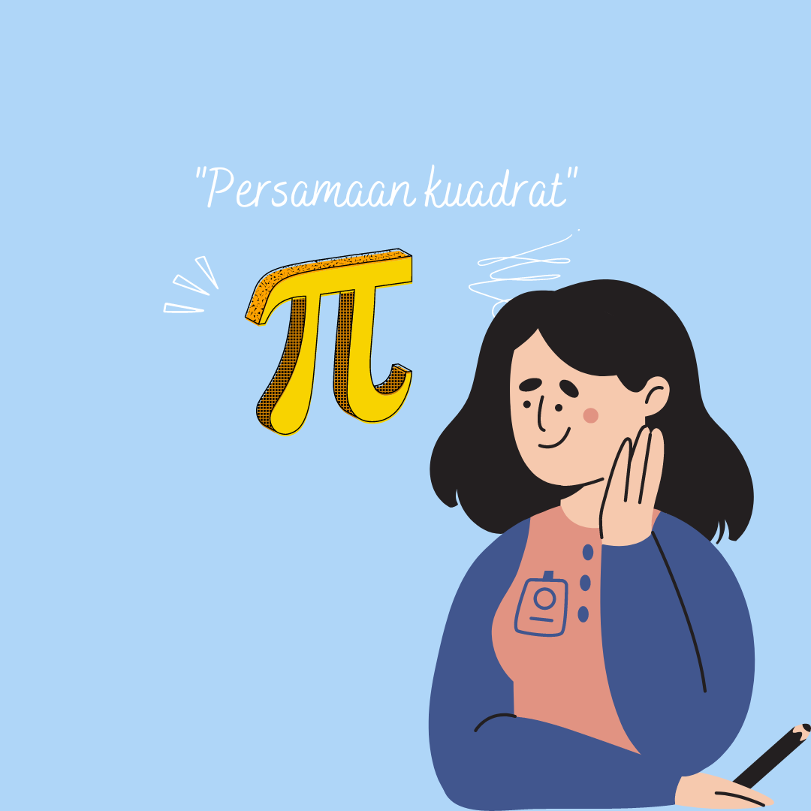
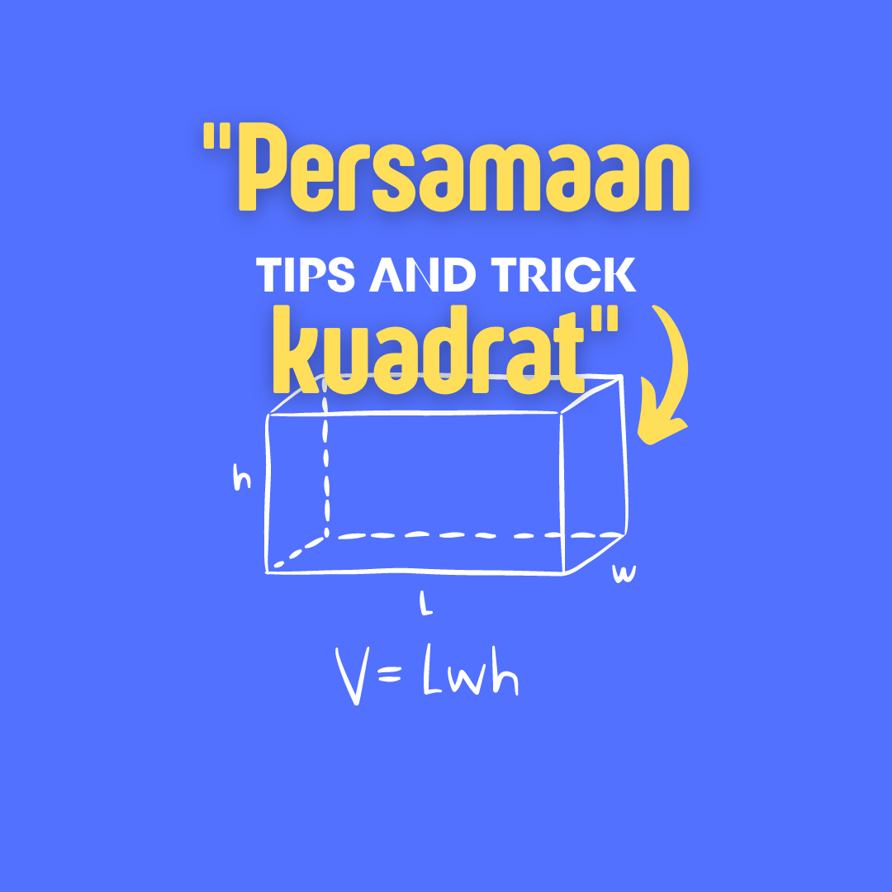

"Video Pembelajaran"
Silahkan liat video tutorialnya

Quadratic Equation Problems FULL ANIMATION

Video kali ini membahas materi Matematika Kelas 9 - Fungsi Kuadrat (1) - Bentuk Umum Fungsi Kuadrat, Pembuat Nol Fungsi Kuadrat
Bentuk Umum Fungsi Kuadrat, Pembuat Nol Fungsi Kuadrat

Di video ini kita belajar persamaan kuadrat dalam bentuk animasi bahasa inggris
Algebra 69 - Quadratic Equations

Persamaan dan Fungsi Kuadrat (Materi LENGKAP)